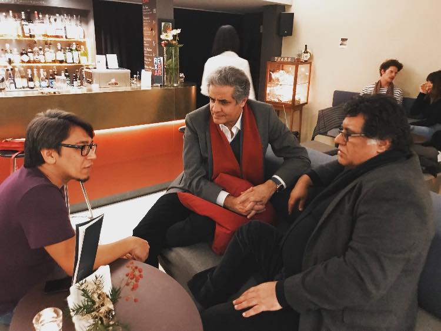
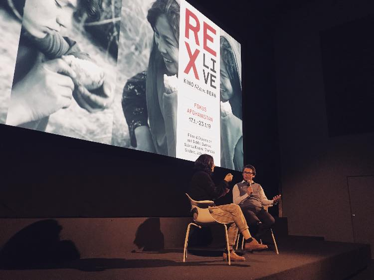

Der afghanische Filmemacher Mortaza Shahed, der als Flüchtling in der Schweiz lebt, hat eine Filmreihe mit aktuellen Produkten aus seiner Heimat zusammengestellt. Die Filme erzählen nicht nur von Krieg und Flucht. Sie machen auch eine Geschichte und eine Kultur sichtbar, die unter dem Terror der Gewalt zu verschwinden drohen.
Und dies in einem solchen Mass, das selbst die subtilsten, die bescheidensten Freuden ausgelöscht wurden. Kein Klang von Musik. Kein Malen, kein Bild. Keine Farbe. Keine Spur von Zuneigung. Kein Recht, Liebe auszudrücken. Keine Liebe. Keine Kunst. Keine Kultur.
Mit dieser Filmreihe laden wir ein zentralasiatisches Land, das in seinen Bergen gefangen ist, in ein mitteleuropäisches Land ein, das seine Berge als Garanten seiner Freiheit sieht. Willkommen zu einer Reise in einen weit entfernten Teil dieser Welt. In eine Gesellschaft mit unterschiedlichen Ethnien, mit unterschiedlichen Sprachen, mit unterschiedlichen Religionen. Wie viele Gemeinsamkeiten hatten die Menschen Afghanistans und der Schweiz einmal. Doch wie schrecklich unterschiedlich waren die Wege, die sie ins 21. Jahrhundert führten. Afghanistan hat pausenlos Kriege ertragen. Kriege, die zu Armut, Traditionalismus, Depression und Rassismus führen. Kriege, die die afghanische Gesellschaft so verletzlich machten, dass die engstirnigsten, die schrecklichsten Menschen dieser modernen Welt sie erobern und ihre Brutalität einer bereits leidenden Bevölkerung aufzwingen konnten. Und dies in einem solchen Mass, das selbst die subtilsten, die bescheidensten Freuden ausgelöscht wurden. Kein Klang von Musik. Kein Malen, kein Bild. Keine Farbe. Keine Spur von Zuneigung. Kein Recht, Liebe auszudrücken. Keine Liebe. Keine Kunst. Keine Kultur.
Die Hartnäckigkeit der Gewalt hat es zunehmend schwierig gemacht, sich an die Kultur Afghanistans zu erinnern. Die kollektiven Erinnerungen drohen zu verschwinden: die Erinnerungen an das gemeinsame Spiel von Tabla und Harmonium, an die leuchtenden Farben der traditionellen Kleider der Frauen, an die Drachen, die über Kabul fliegen. Und was ist Kultur, wenn nicht die unsichtbare Materie, die eine Gesellschaft glücklich zusammenhält? Was ist Kultur, wenn nicht das, was den Bürgerinnen und Bürgern ihr Zugehörigkeitsgefühl und ihren Stolz gibt. Kultur ist ein Ensemble von gemeinsamen moralischen Werten, von gemeinsamen ästhetischen Freuden, eine gemeinsame Geschichte. Sie ist für die Gesellschaft, was die Seele für den Körper ist. Die Filmschaffenden, die wir eingeladen haben, sind Teil einer aufstrebenden Bewegung, die das Geschichtenerzählen zu neuem Leben erweckt und damit die Geschichte Afghanistans verändern wird. Denn auch die Afghaninnen und Afghanen sehnen sich nach ihrer Seele. Die Filmreihe widmet sich dem Krieg, den Frauen, den Kindern und den jungen Menschen, die aus einem zerrissenen Land fliehen. Denn die Heilung einer Gesellschaft beginnt wie die Heilung eines Individuums: mit der Erkenntnis ihrer Not und ihres Schmerzes.
Quelle: Kino Rex Bern Seite